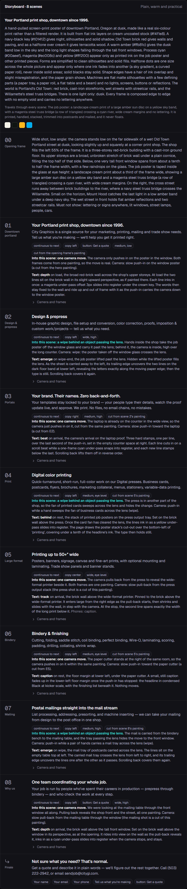
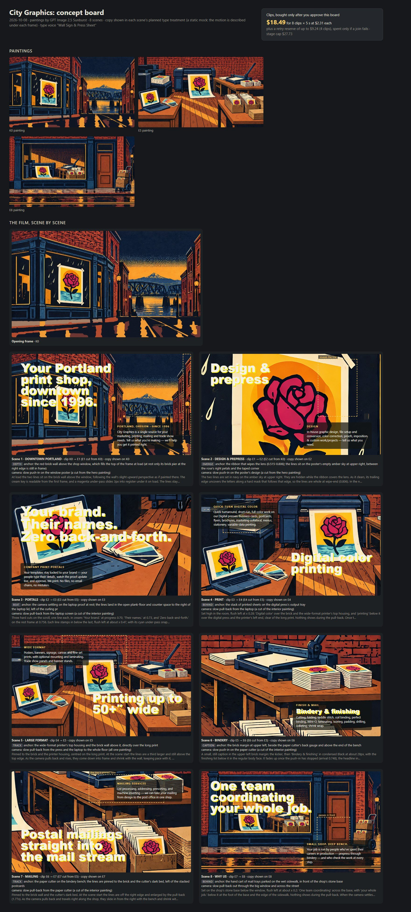
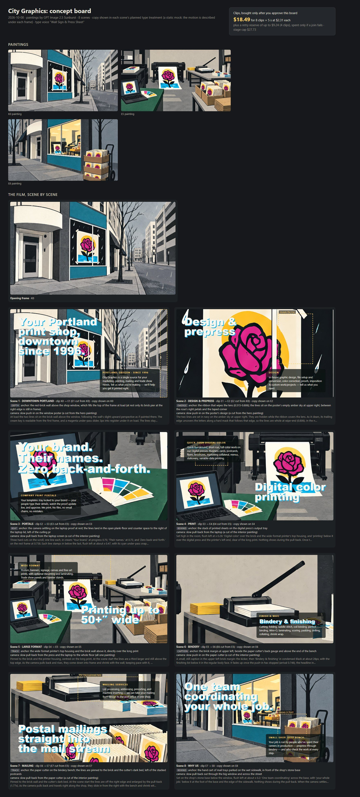
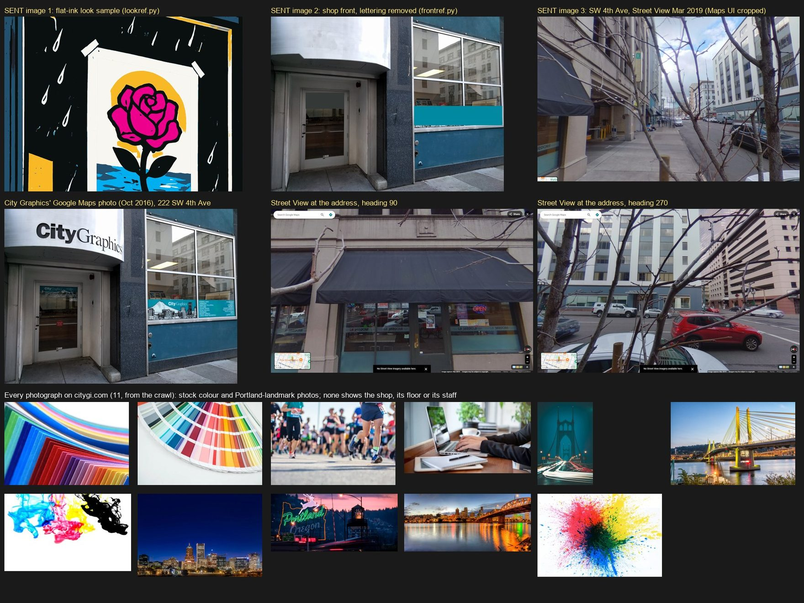
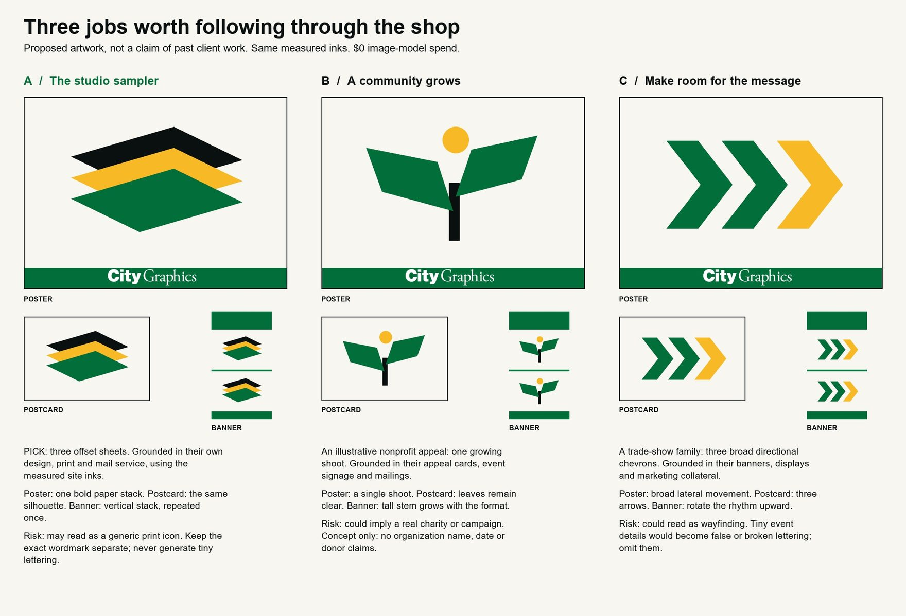
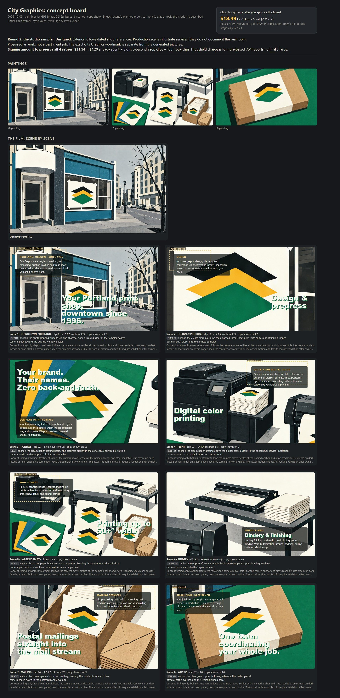
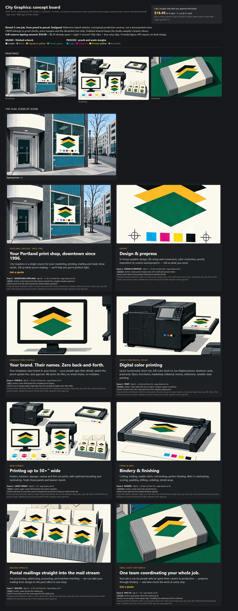
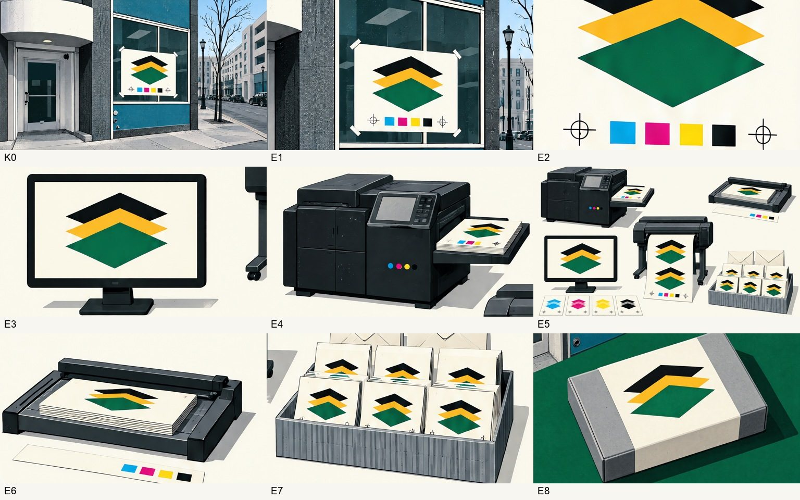
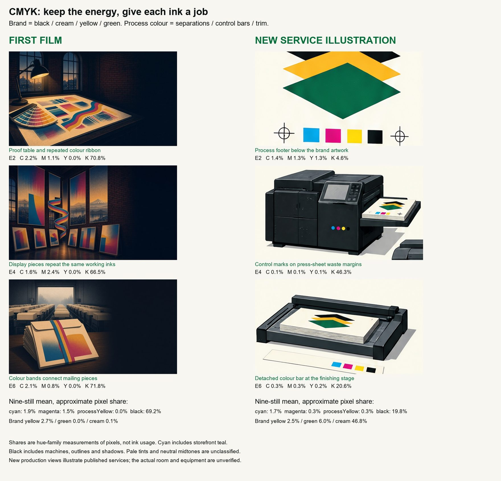

City Graphics: films and concepts so far
Private review page for Mackintosh Marketing. Nothing here is the official citygi.com site. Updated 9 Oct 2026.
1. The films that were built
Film 1: screen-print Portland at dusk, CMYK ribbon
Job 2026-10-01 · Grok stills, Seedance 2.5 clips · first published 3 Oct, rebuilt since (guillotine scene replaced, shorter smoother scroll, phone frame sets)
The eight-scene scroll film with the full site rebuilt around it (services, why us, portals, non-profit, learn, contact, quote).
Open film 1 Film 2: the illustrated look kept, portals scene added
Job 2026-10-05 · the strengthened maker: art direction, one shot per scene, same-painting cuts, text plan per scene
The same site structure with the film redone from a new storyboard. Its storyboard is below.
Open film 2

Film 2 storyboard: shot, bridge, cut and text plan per scene. 2. Concept boards for the next film (nothing animated, no clips bought)
Each board shows the painted stills for all scenes before any clip is paid for. Later boards replace earlier ones.
A. GPT Image 2.5 Sunburst at 4k: rose and amber sun
6 and 7 Oct · rejected: too much orange, still reads as generated, not Portland enough

Sunburst 4k board: the poster-in-window motif, amber ground. B. Round 1 from the real place: citygi.com's palette and the real shop front
8 Oct · palette measured off citygi.com (black, cream, signature yellow); the shop at 222 SW 4th Ave from Google Maps and Street View; overcast Portland light; rose kept

Round 1 board. 
The online references used for the shop front. C. Round 2: online references widened, rose replaced by the studio sampler
8 Oct · three motif candidates from their brand; the chosen one is three offset sheets in black, yellow and green · review 1 pass, 6 warn, 2 fail

The three motif candidates. The studio sampler (left) was chosen. 
Round 2 board. D. Round 3: studio sampler with working CMYK (current, still being tidied)
9 Oct · the process ribbon from film 1 brought back as a measured colour role; scene 7 is being re-cut now, so this board may change

Round 3 board. 
Round 3 final stills at 1280 by 720. 
Film 1 beside round 3, with measured colour-family shares.